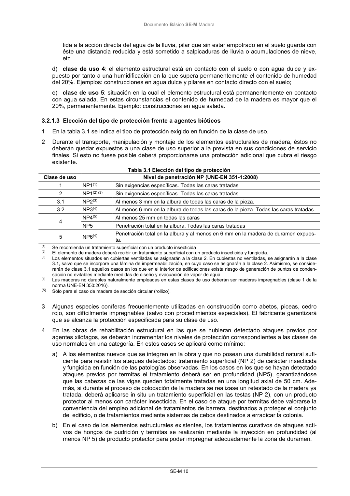
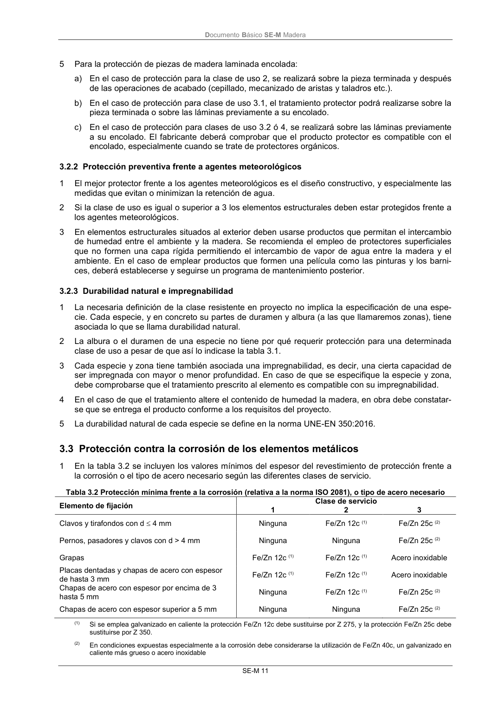

DB-SE-M · 3.2.1.3 Elección del tipo de protección frente a agentes bióticos · versión 2019-12-20 · capa oficial
Formatos: JSON compacto · Markdown · PDF fuente
Ámbito del documento · texto del ámbito · documento y tablas
ID técnico a0038 · PDF pág. 16-17 · jerarquía no validada por persona · contrastado con el literal de la página 16 (candidato tipográfico); no validado por persona · padre: raíz
3.2.1.3 Elección del tipo de protección frente a agentes bióticos 1 En la tabla 3.1 se indica el tipo de protección exigido en función de la clase de uso. 2 Durante el transporte, manipulación y montaje de los elementos estructurales de madera, éstos no deberán quedar expuestos a una clase de uso superior a la prevista en sus condiciones de servicio finales. Si esto no fuese posible deberá proporcionarse una protección adicional que cubra el riesgo existente. Tabla 3.1 Elección del tipo de protección Clase de uso Nivel de penetración NP (UNE-EN 351-1:2008) 1 NP1(1) Sin exigencias específicas. Todas las caras tratadas 2 NP1(2) (3) Sin exigencias específicas. Todas las caras tratadas 3.1 NP2(3) Al menos 3 mm en la albura de todas las caras de la pieza. 3.2 NP3(4) Al menos 6 mm en la albura de todas las caras de la pieza. Todas las caras tratadas. 4 NP4(5) Al menos 25 mm en todas las caras NP5 Penetración total en la albura. Todas las caras tratadas 5 NP6(4) Penetración total en la albura y al menos en 6 mm en la madera de duramen expues- ta. (1) Se recomienda un tratamiento superficial con un producto insecticida (2) El elemento de madera deberá recibir un tratamiento superficial con un producto insecticida y fungicida. (3) Los elementos situados en cubiertas ventiladas se asignarán a la clase 2. En cubiertas no ventiladas, se asignarán a la clase 3.1, salvo que se incorpore una lámina de impermeabilización, en cuyo caso se asignarán a la clase 2. Asimismo, se conside- rarán de clase 3.1 aquellos casos en los que en el interior de edificaciones exista riesgo de generación de puntos de conden- sación no evitables mediante medidas de diseño y evacuación de vapor de agua (4) Las maderas no durables naturalmente empleadas en estas clases de uso deberán ser maderas impregnables (clase 1 de la norma UNE-EN 350:2016). (5) Sólo para el caso de madera de sección circular (rollizo). 3 Algunas especies coníferas frecuentemente utilizadas en construcción como abetos, piceas, cedro rojo, son difícilmente impregnables (salvo con procedimientos especiales). El fabricante garantizará que se alcanza la protección especificada para su clase de uso. 4 En las obras de rehabilitación estructural en las que se hubieran detectado ataques previos por agentes xilófagos, se deberán incrementar los niveles de protección correspondientes a las clases de uso normales en una categoría. En estos casos se aplicará como mínimo: a) A los elementos nuevos que se integren en la obra y que no posean una durabilidad natural sufi- ciente para resistir los ataques detectados: tratamiento superficial (NP 2) de carácter insecticida y fungicida en función de las patologías observadas. En los casos en los que se hayan detectado ataques previos por termitas el tratamiento deberá ser en profundidad (NP5), garantizándose que las cabezas de las vigas queden totalmente tratadas en una longitud axial de 50 cm. Ade- más, si durante el proceso de colocación de la madera se realizase un retestado de la madera ya tratada, deberá aplicarse in situ un tratamiento superficial en las testas (NP 2), con un producto protector al menos con carácter insecticida. En el caso de ataque por termitas debe valorarse la conveniencia del empleo adicional de tratamientos de barrera, destinados a proteger el conjunto del edificio, o de tratamientos mediante sistemas de cebos destinados a erradicar la colonia. b) En el caso de los elementos estructurales existentes, los tratamientos curativos de ataques acti- vos de hongos de pudrición y termitas se realizarán mediante la inyección en profundidad (al menos NP 5) de producto protector para poder impregnar adecuadamente la zona de duramen. DocumentoBásico SE-M Madera SE-M 11 5 Para la protección de piezas de madera laminada encolada: a) En el caso de protección para la clase de uso 2, se realizará sobre la pieza terminada y después de las operaciones de acabado (cepillado, mecanizado de aristas y taladros etc.). b) En el caso de protección para clase de uso 3.1, el tratamiento protector podrá realizarse sobre la pieza terminada o sobre las láminas previamente a su encolado. c) En el caso de protección para clases de uso 3.2 ó 4, se realizará sobre las láminas previamente a su encolado. El fabricante deberá comprobar que el producto protector es compatible con el encolado, especialmente cuando se trate de protectores orgánicos.


PDF fuente redistribuible: copia fiel enlazada en esta página (SHA256 verificado).